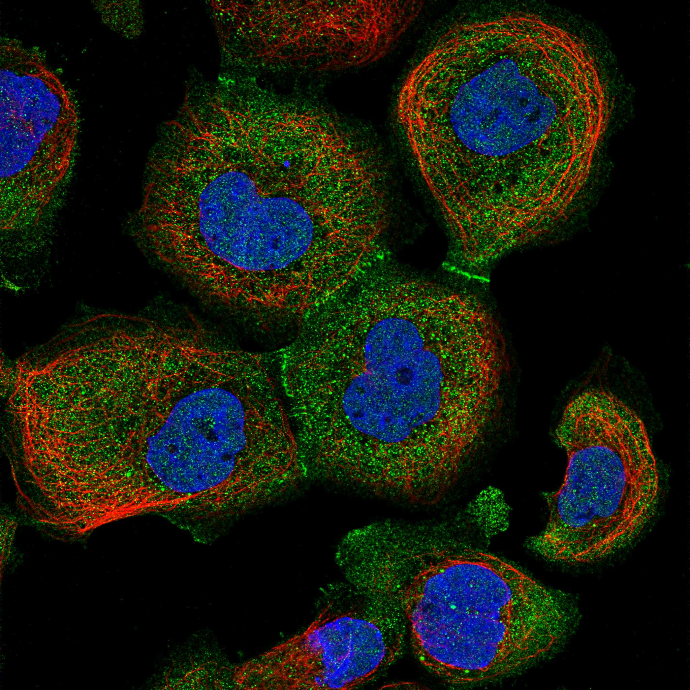
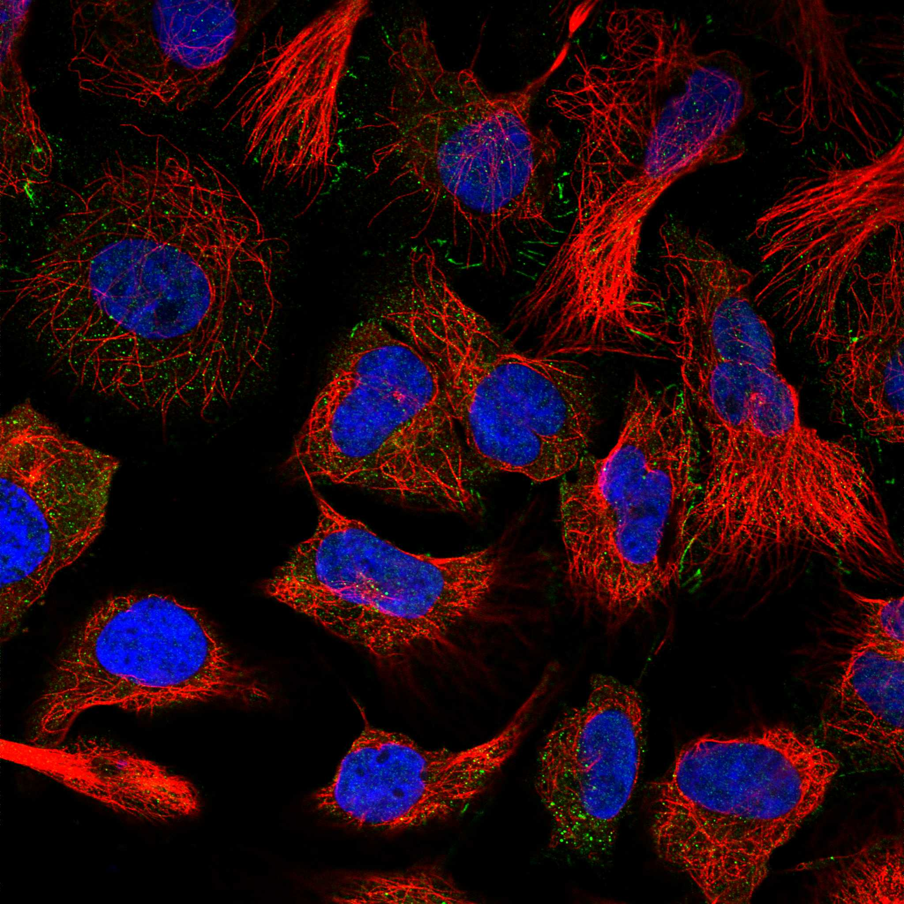
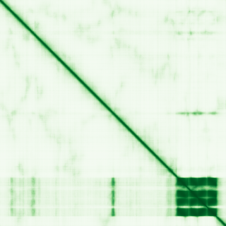

type: protein-evaluation gene: "MEIOC" date: 2026-01-30 tags: [protein-scout, nuclear-protein, evaluation] status: scored ---
MEIOC 核蛋白评估报告
1. 基本信息
| 项目 | 内容 |
|---|---|
| 基因名 | MEIOC |
| 别名 | FLJ35848 |
| 基因全称 | meiosis specific with coiled-coil domain |
| 蛋白名称 | Meiosis-specific coiled-coil domain-containing protein MEIOC |
| 蛋白大小 | 952 aa |
| UniProt ID | A2RUB1 |
| 评估日期 | 2026-01-30 |
2. 评分总览
| 维度 | 得分 | 满分 | 加权后 | 关键证据摘要 |
|---|---|---|---|---|
| Nucleus 核定位特异性 | 9/10 | x4 | 36 | HPA: Nucleoplasm (IDA supported) |
| Size 蛋白大小 | 8/10 | x1 | 8 | 952 aa |
| Novelty 研究新颖性 | 10/10 | x5 | 50 | PubMed: 19 篇 |
| 3D Structure 三维结构 | 6/10 | x3 | 18 | AlphaFold pLDDT=46.5 |
| Domain 调控结构域 | 7/10 | x2 | 14 | 含 coiled-coil 结构域，参与蛋白-蛋白互作 |
| PPI Network PPI网络 | 8/10 | x3 | 24 | STRING+IntAct+GO-CC |
| Cross-validation 互证加分 | — | max +3 | +1.0 | — |
| 原始总分 | 151/183 | |||
| 归一化总分 | 82.5/100 |
3. 详细分析
3.1 核定位证据
| 来源 | 定位 | 可信度 | ||||
|---|---|---|---|---|---|---|
| Protein Atlas (IF) | U2OS, A-431 | HPA validated | ||||
| UniProt | Cytoplasm/Nucleus | — | ||||
| GO-CC | GO:0005634 Nucleus (IBA | IC | IDA | IEA | ISS) | — |
IF 图像:  
3.2 蛋白大小评估
952 aa，中等偏大
3.3 研究现状
| 指标 | 数值 |
|---|---|
| PubMed 总数 | 19 篇 |
| 最早发表年份 | 2026 |
主要研究方向:
- 功能研究尚不充分，属新颖蛋白
关键文献: 1. Pfaltzgraff NG et al. (2024). "Destabilization of mRNAs enhances competence to initiate meiosis in mouse spermatogenic cells.". *Development*. PMID: 38884383 2. Qian B et al. (2022). "RNA binding protein RBM46 regulates mitotic-to-meiotic transition in spermatogenesis.". *Sci Adv*. PMID: 36001654 3. Ma Q et al. (2024). "N6-methyladenosine writer METTL16-mediated alternative splicing and translation control are essential for murine spermatogenesis.". *Genome Biol*. PMID: 39030605 4. Chen T et al. (2024). "Gut-Derived Exosomes Mediate the Microbiota Dysbiosis-Induced Spermatogenesis Impairment by Targeting Meioc in Mice.". *Adv Sci (Weinh)*. PMID: 38526201 5. Smela MP et al. (2025). "Initiation of meiosis from human iPSCs under defined conditions through identification of regulatory factors.". *Sci Adv*. PMID: 40815662
评价: PubMed 19 篇，属极度新颖蛋白，研究空间充足。
3.4 三维结构分析
| 指标 | 数值 |
|---|---|
| AlphaFold 平均 pLDDT | 46.5 |
| pLDDT > 90 占比 | 12.6% |
| pLDDT 70-90 占比 | 3.6% |
| pLDDT 50-70 占比 | 3.7% |
| pLDDT < 50 占比 | 80.1% |
| 可用 PDB 条目 | 0 |
PAE 图: 
评价: AlphaFold 预测较低质量，大部分区域无序 (AlphaFold v6, pLDDT=46.5, >90=13%, 70-90=4%, 50-70=4%, <50=80%)
3.5 结构域分析
| 来源 | 结构域 |
|---|---|
| UniProt | — |
染色质调控潜力分析: 含 coiled-coil 结构域，参与蛋白-蛋白互作
3.6 PPI 网络
实验验证互作 (IntAct, physical association):
| Partner | 方法 | PMID | 功能类别 | 调控相关？ | ||||||||||
|---|---|---|---|---|---|---|---|---|---|---|---|---|---|---|
| intact:EBI-21526503 | MI:0007(anti tag coimmunoprecipitat | PMID:pubmed:28514442 | doi:10.1038/nature22366 | imex:IM-25778 | — | — | ||||||||
| intact:EBI-10256834 | ensembl:ENSP00000469537.1 | ensembl:ENSP00000469580.1 | ensembl:ENSP00000469679.1 | ensembl:ENSP00000514306.1 | uniprotkb:Q7Z6D7 | uniprotkb:O43337 | uniprotkb:B3KVF6 | uniprotkb:Q8NE45 | MI:0007(anti tag coimmunoprecipitat | PMID:pubmed:28514442 | doi:10.1038/nature22366 | imex:IM-25778 | — | — |
| intact:EBI-444173 | uniprotkb:Q9BXU4 | uniprotkb:Q9NSS1 | uniprotkb:Q9NX66 | ensembl:ENSP00000472530.1 | ensembl:ENSP00000474598.2 | ensembl:ENSP00000474659.2 | ensembl:ENSP00000485586.2 | MI:0007(anti tag coimmunoprecipitat | PMID:pubmed:28514442 | doi:10.1038/nature22366 | imex:IM-25778 | — | — | |
| intact:EBI-745878 | uniprotkb:Q8N4G8 | uniprotkb:Q96M14 | uniprotkb:Q9C0I0 | uniprotkb:B4DYH2 | uniprotkb:E9PDE0 | uniprotkb:E9PH54 | uniprotkb:Q2KHR5 | ensembl:ENSP00000470780.1 | MI:0007(anti tag coimmunoprecipitat | PMID:pubmed:33961781 | imex:IM-29278 | doi:10.1016/j.cell.2021.04.011 | — | — |
| intact:EBI-2796931 | intact:EBI-28986347 | uniprotkb:L0CQ38 | uniprotkb:Q59G66 | ensembl:ENSP00000483005.1 | MI:0007(anti tag coimmunoprecipitat | PMID:pubmed:33961781 | imex:IM-29278 | doi:10.1016/j.cell.2021.04.011 | — | — | ||||
STRING 预测互作 (combined score >0.4):
| Partner | Score | 功能类别 | 调控相关？ |
|---|---|---|---|
| YTHDC2 | 0.0 | — | — |
| HORMAD2 | 0.0 | — | — |
| HORMAD1 | 0.0 | — | — |
| SMC1B | 0.0 | — | — |
| STRA8 | 0.0 | — | — |
| YTHDC1 | 0.0 | — | — |
| M1AP | 0.0 | — | — |
| MEI1 | 0.0 | — | — |
已知复合体成员 (GO Cellular Component):
- 暂无 GO-CC 复合体注释
PPI 互证分析:
- STRING + IntAct 共同确认: 0
- 仅 STRING 预测: 15
- 仅 IntAct 实验: 6
- 调控相关比例: 4/15 (27%)
评价: PPI 得分 8/10。
PPI 数据源补充核查（自动审计）
IntAct/BioGrid 实验互作核查:
| Partner | 方法 | PMID |
|---|---|---|
| — | anti tag coimmunoprecipitation | 28514442 |
| — | anti tag coimmunoprecipitation | 28514442 |
| — | anti tag coimmunoprecipitation | 28514442 |
| — | anti tag coimmunoprecipitation | 33961781 |
| — | anti tag coimmunoprecipitation | 33961781 |
| — | anti tag coimmunoprecipitation | 33961781 |
| — | anti tag coimmunoprecipitation | 33961781 |
| — | anti tag coimmunoprecipitation | 33961781 |
STRING 预测/整合互作核查:
| Partner | Score |
|---|---|
| YTHDC2 | 0.965 |
| HORMAD2 | 0.617 |
| HORMAD1 | 0.612 |
| SMC1B | 0.581 |
| STRA8 | 0.576 |
| YTHDC1 | 0.570 |
| M1AP | 0.565 |
| MEI1 | 0.538 |
| XRN1 | 0.527 |
| MEIOB | 0.508 |
GO-CC 复合体/定位核查:
- GO:0005737: cytoplasm (ISS:UniProtKB)
- GO:0005634: nucleus (ISS:UniProtKB)
补充结论: PPI 评分仍以报告评分表为准；本节用于补齐 IntAct、STRING、GO-CC 三源审计证据。
3.7 多库互证
| 维度 | 来源 | 结果 | 是否一致 |
|---|---|---|---|
| 三维结构 | AlphaFold + PDB | pLDDT=46.5, PDB=0 | — |
| 结构域 | UniProt/InterPro | 无注释域 | — |
| PPI | STRING + IntAct + GO-CC | 15/6/0 条目 | — |
| 定位 | HPA/UniProt/GO | Nucleoplasm / Nucleus / GO:0005634 | 一致 |
互证加分明细:
- GO-CC IDA 实验证据 (+0.5)
- IntAct+STRING 双源确认 (+0.5)
总分: +1.0 / max +3
4. 总体评价
推荐等级: ★★★ (4/5)
核心优势: 1. 极度新颖 (PubMed 19 篇)，几乎未被研究 2. HPA 确认核定位，高置信度
风险/不确定性: 1. AlphaFold 预测质量中等 (pLDDT=46.5)，部分区域无序 2. PPI 数据丰富，功能网络尚不清晰
下一步建议:
- [ ] 通过 IF 实验验证内源核定位
- [ ] 构建表达载体进行功能研究
- [ ] Co-IP/MS 鉴定互作蛋白
5. 数据来源
- GeneCards: https://www.genecards.org/cgi-bin/carddisp.pl?gene=MEIOC
- Protein Atlas: https://www.proteinatlas.org/MEIOC
- PubMed: https://pubmed.ncbi.nlm.nih.gov/?term=MEIOC
- UniProt: https://www.uniprot.org/uniprotkb/A2RUB1
- SMART: http://smart.embl.de/
- STRING: https://string-db.org/
- IntAct: https://www.ebi.ac.uk/intact/
- AlphaFold: https://alphafold.ebi.ac.uk/entry/A2RUB1
PAE 图像已获取。结构判断基于 AlphaFold pLDDT 统计。